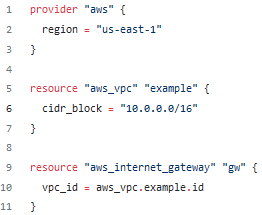

providers are plugins that allow Terraform to interact with specific infrastructure resources. They act as an interface between Terraform and the underlying infrastructure, translating the Terraform configuration into the appropriate API calls and allowing Terraform to manage resources across a wide variety of environments
Resources in Terraform refer to the components of infrastructure that Terraform is able to manage, such as virtual machines, virtual networks, DNS entries, pods, and others. Each resource is defined by a type, such as “aws_instance” or “google_dns_record”, “kubernetes_pod”, “oci_core_vcn”, and has a set of configurable properties, such as the instance size, vcn cidr, etc.


A data source is a configuration object that retrieves data from an external source and can be used in resources as arguments when they are created or updated. When I am talking about an external source, I am referring to absolutely anything: manually created infrastructure, resources created from other terraform configurations, and others.
Data sources are defined in their respective providers and you can use them with a special block called data
The documentation of a data source is pretty similar to one of a resource, so if you’ve mastered how to use that one, this will be a piece of cake.
An output is a way to easily view the value of a specific data source, resource, local, or variable after Terraform has finished applying changes to infrastructure. It can be defined in the Terraform configuration file and can be viewed using the terraform output command, but just to reiterate, only after a terraform apply happens. Outputs can be also used to expose different resources inside a module

Terraform variables and locals are used to better organize your code, easily change it, and make your configuration reusable.
Before jumping into variables and locals in Terraform, let’s first discuss their supported types.
Usually, in any programming language, when we are defining a variable or a constant, we are assigning it, or it infers a type.
Supported types in Terraform:
Primitive:
Complex — These types are created from other types:
Null — Usually represents absence, really useful in conditional expressions.
There is also the "any" type, in which you basically add whatever you want without caring about the type, but I really don’t recommend it as it will make your code harder to maintain.
Every variable will be declared with a variable block and we will always use it with var.variable_name

There are a couple of other ways you can assign values to variables. If you happen to specify a value for a variable in multiple ways, Terraform will use the last value it finds, by taking into consideration their precedence order. I’m going to present these to you now:
- using a default → as in the example above, this will be overwritten by any other option
- using a terraform.tfvarsfile → this is a special file in which you can add values to your variables
- using a *.auto.tfvars file → similar to the terraform.tfvars file, but will take precedence over it. The variables' values will be declared in the same way. The “*” is a placeholder for any name you want to use
- using -var or -var-file when running terraform plan/apply/destroy. When you are using both of them in the same command, the value will be taken from the last option.
terraform apply -var="instance_type=t3.micro" -var-file="terraform.tfvars" → This will take the value from the var file, but if we specify the -var option last, it will get the value from there.
More examples:


list(string) — in this variable, you can declare how many strings you want inside the list. You are going to access an instance of the list by using var.my_list_of_strings[index]. Keep in mind that lists start from 0. var.my_list_of_strings[1] will return string2.
map(string) — in this variable, you can declare how many key:value pairs you want. You are going to access an instance of the map by using var.my_map_of_strings[key] where key is on the left-hand side from the equal sign. var.my_map_of_strings["key3"] will return value
object({}) — inside of an object, you are declaring parameters as you see fit. You can have simple types inside of it and even complex types and you can declare as many as you want. You can consider an object to be a map having more explicit types defined for the keys. You are going to access instances of an object, by using the same logic as you would for a map.
map(object({})) — I’ve specified this complex build, because this is something I am using a lot inside of my code because it works well with for_each (don’t worry, we will talk about this in another post). You are going to access a property of an object in the map by using var.my_map_of_objects["key"]["parameter"] and if there are any other complex parameters defined you will have to go deeper. var.my_map_of_objects["elem1"]["parameter1"] will return value. var.my_map_of_objects["elem1"]["parameter3"]["key1"] will return value1.
list(object({})) — This is something I’m using in dynamic blocks(again, we will discuss this in detail in another post). You are going to access a property of an object in the list, by using var.my_list_of_objects[index]["parameter"]. Again, if there are any parameters that are complex, you will have to go deeper. var.my_list_of_objects[0]["parameter1"] will return value.
One important thing to note is the fact that you cannot reference other resources or data sources inside a variable, so you cannot say that a variable is equal to a resource attribute by using the type.name.attribute.
Locals
On the other hand, a local variable assigns a name to an expression, making it easier for you to reference it, without having to write that expression a gazillion times. They are defined in a locals block, and you can have multiple local variables defined in a single local block.
Locals values are not set by the user input or values in .tfvars files, instead, they are set ‘locally’ to the configuration (hence the name). Instead of hardcoding values, local values can produce a more meaningful or readable result Let’s take a look: